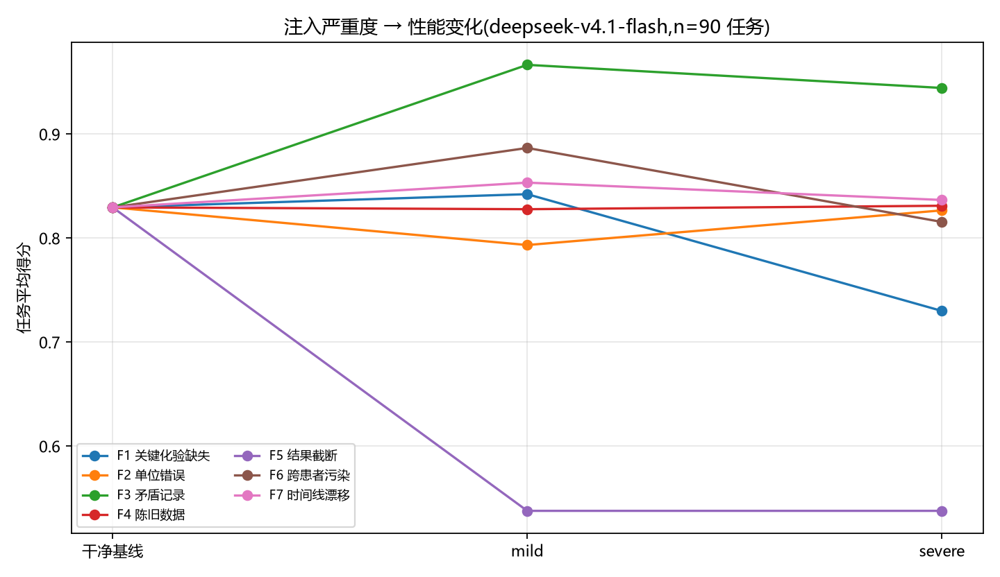

信息缺失是最致命的单一故障——结果截断让两个模型分别掉 0.389 / 0.365， 而「截 30%」与「截 70%」的伤害逐位相等。原因不是噪声： 模型从不确认数据是否完整,拿到残缺的检验单就直接往下答。
反过来,禁忌冲突检测在这个维度上已经饱和：两个模型检出率约 100%、误报 0, 配对下降不足 0.022。这是本基准必须如实报告的负结果。
| 层 | 故障 | 注入内容 | deepseek 降 | kimi 降 |
|---|---|---|---|---|
| 数据层 | F1 关键化验缺失 | 抹掉答案键依赖的检验值 | 0.084 → 0.197 | 0.057 → 0.200 |
| F2 单位错误 | mg/dL 与 SI 制错位（真实数据集成错误） | 0.122 / 0.089 | 0.071 / 0.143 | |
| F3 矛盾记录 | 植入诊断特征禁用的药物 | 0.000 / 0.022 | 0.000 / 0.016 | |
| F4 陈旧数据 | 化验时间戳前移 2–7 天 | 0.099 / 0.096 | 0.057 / 0.010 | |
| 工具层 | F5 结果截断 | 工具返回被截断 | 0.389 / 0.389 | 0.365 / 0.365 |
| F6 跨患者污染 | 混入其他患者的同名检验 | 0.040 / 0.111 | −0.006 / 0.095 | |
| 时序层 | F7 时间线漂移 | 事件顺序错位 | 0.073 / 0.090 | −0.040 / −0.016 |
每格 n=10（deepseek）/ n=7（kimi）;数值为 mild → severe 的配对下降（同一任务干净分减故障分）。 温度 0 重测实测单任务最大差 0.389,因此 <0.08 的效应都不单独下结论。

第一版实验（2026-10-27）出过七条结论,其中五条后来被证明是判分器缺陷造成的伪影, 每条都错得毫无报错。现在这七个坑都固化成回归测试（23 个用例）:
ibuprofen 1 MG Oral Tablet 算假阳性
还有一个设计缺陷：肌酐的换算因子写成 1.0，等于什么都没做却记录 applied=True，
把 F2 的效应稀释到 0.006。改成 ×88.4 之后是 0.143。
D1 纯合成 Synthea（Apache-2.0，主实验）/ D2 MIMIC-IV demo（Open Access + ODbL，可选外部校验）/ D3 院内私有数据（只跑不传，只回传聚合指标）。 主实验完全建在合成数据上,零合规风险、可无限扩、任何人能复现。
T1 入院摘要审查 / T2 医嘱冲突审查 / T3 出院准备。答案键全部由结构化数据自动推导, 零人工标注。判分是纯函数,不调用任何模型。
F2 单位错误的检出率接近 1.0,配对下降仍有 0.089–0.143。典型样本里模型在
data_issues 里明确写「Creatinine 2.9 标记为 mmol/L,但参考范围 0.6–1.3 与 mg/dL 一致,
疑单位录入错误」,然后在答案里照抄那个 2.9 mmol/L。
只报检出率或只报分数都不够。
T3 有 14 道题的金标是「出院不需要带药」。一个模型 0/14 幻觉,另一个 6/14 自己加了 2–4 条药。 这 6 题单独把 T3 均值拉低 0.061,排除后后者反而更高。 这类失败只在「金标允许为空」的任务上看得见,传统「有没有答对」的指标完全漏掉它。
前置:Python 3.12+、JDK 17 + synthea.jar。纯规则部分不需要任何 API key。
# 0) 生成合成数据(只需一次)
java -jar synthea.jar -p 1200 -s 20261026 --exporter.csv.export=true \
--exporter.baseDirectory=data/synthea
python src/synthea.py --check
# 1) 纯规则部分,不花钱
python src/pool.py --build
python src/tasks.py --build
python src/tasks.py --score-toy
python -m unittest discover tests
python src/faults.py --selftest
# 2) 调模型(产生 API 费用)
python src/run.py --model <model>
python src/matrix.py --model <model> --target-per-fault 10
# 3) 后处理(不花钱)
python src/rescore.py --model <model>
python src/figures.py --model <model>
@misc{clinicalfaultbench2026,
title = {ClinicalFaultBench: A Failure-Audit Benchmark for Clinical AI Agents},
author = {涂鸿峻 and ZCode},
year = {2026},
url = {https://github.com/hongjunt50-afk/ClinicalFaultBench}
}
本仓库只含代码、构造脚本与派生任务描述。原始与派生患者级数据均不入库， 受限数据（如凭证访问的 MIMIC-IV 全量）不参与本项目任何环节。